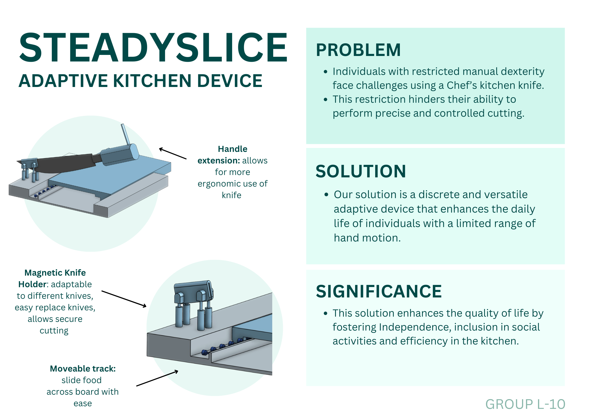

Steadyslice
Steadyslice is a project that aims to address accesibility in the kitchen. It is a cutting board that uses magnets to hold knives in place, allowing users to easily slice and dice ingredients without the risk of the knife slipping. This project was developed as part of my APSC 100 course at the University of British Columbia, where I collaborated with a team to create an innovative solution that enhances accessibility and safety for our target users. Presented through various deliverables, such as a formal writeup, elevator pitch and infographic, this project allowed for our team to explore various forms of engineering communication.
